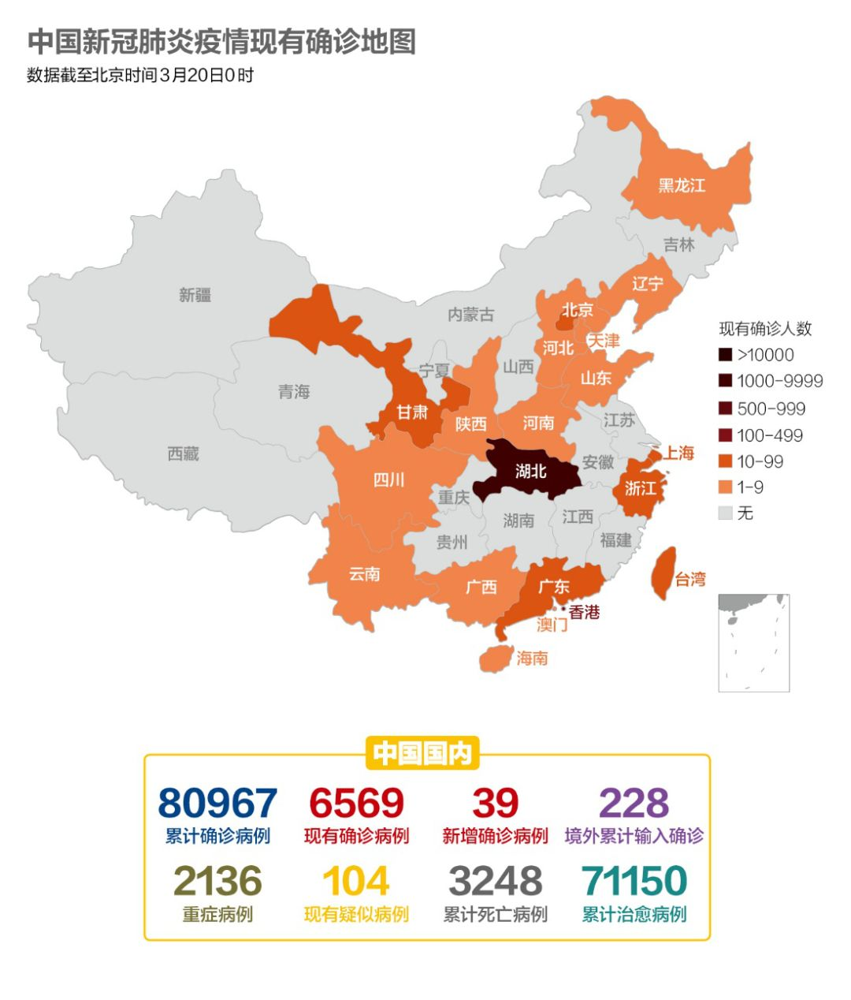
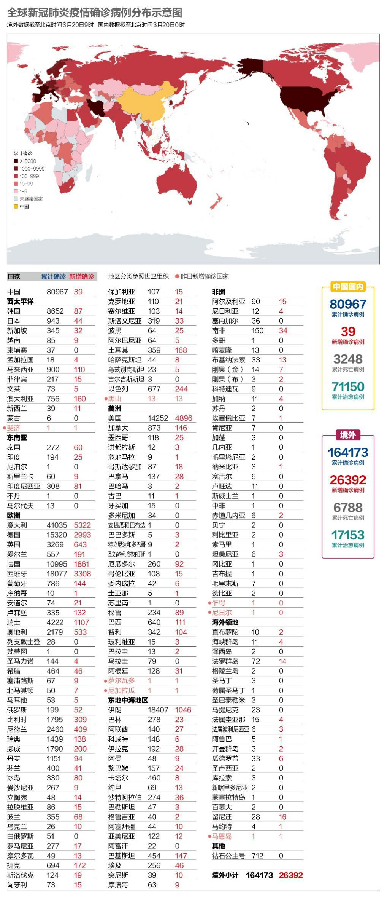
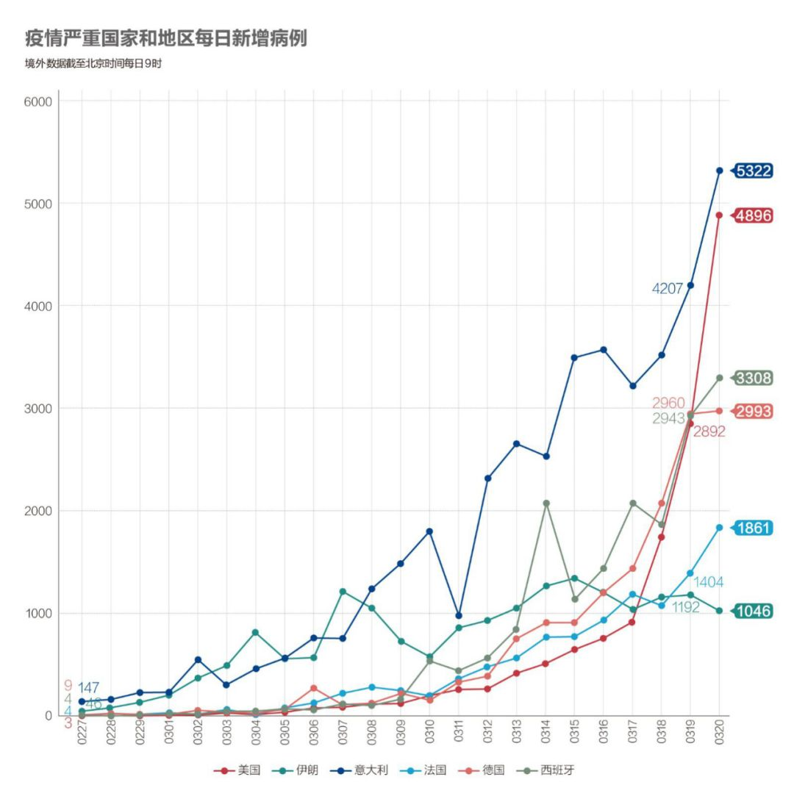
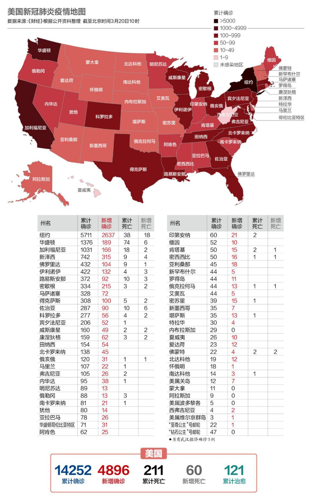
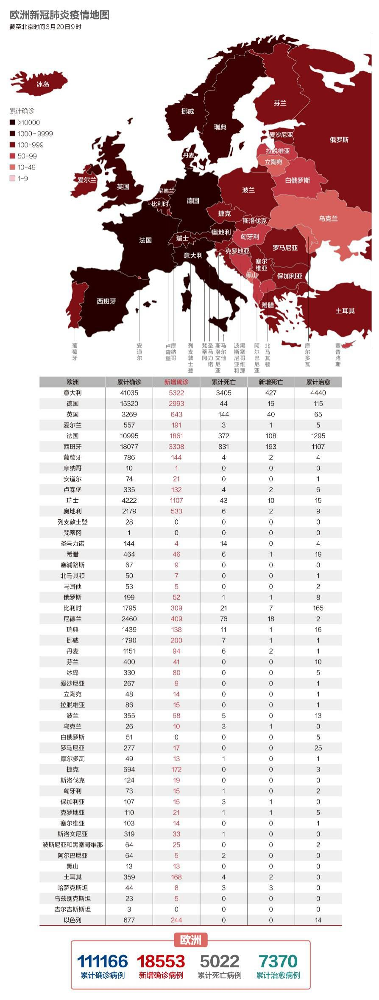
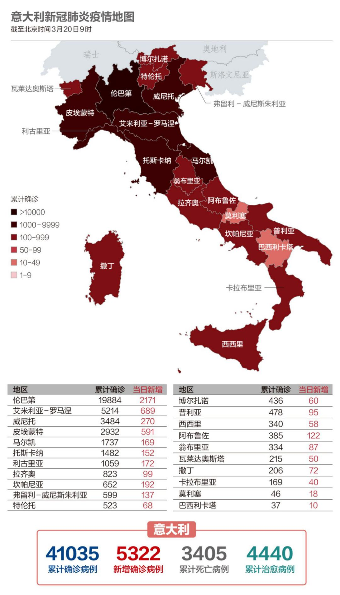

数说疫情0319：武汉新增归零！中国援欧50吨物资
原文链接 备份链接 武汉新增归0，中央再次强调“全面恢复”正常生产生活秩序。海外新增超过2万例。美国将为全民提供免费筛查检测。德国面临“二战以来最大挑战”。意大利伦巴第地区仍有40%居民在外自由活动 文 |《财经》 …

中国国内连续2日无本地新增。全球另有6个国家感染病例过万，美国新增病例已升至全球第二。联合国称这是75年来前所未有的全球健康危机。全球约30亿人缺少肥皂和自来水等抗疫基本武器
文 |《财经》数据研究员 徐进
图 |《财经》视觉中心 编辑 | 郝洲
一、世卫称中国的防疫成绩“了不起”
图1

今日国内简述：截至3月19日24时，国内连续两日本地无新增病例。武汉新增疑似、现有疑似亦为0。新增境外输入确诊病例39例。世卫组织总干事谭德塞3月19日称，自疫情暴发以来中国首次报告无本土新增病例是一项“了不起的成就”。中国正在利用互联网大数据技术加快有序返岗复工，全国首批14个省市区开通“电子健康通行码”省际互认，此事百姓呼吁、企业急需。
二、中国之外6国感染过万，联合国75年历史上“前所未有”的危机
图2

除中国之外，全球范围内已有6个国家累计感染病例超过1万例。其中，意大利41035例，伊朗18407例，西班牙18077例，德国15320例，美国14252例，法国10995例。另有韩国、瑞士、英国等9个国家的累计确诊在1000例以上。
世卫组织称，目前，全球超过70%的国家地区制定了应对新冠肺炎全国预备和响应计划，89%的国家地区拥有实验室检测能力。与此同时，世卫组织为68个国家地区送去了个人防护装备，并将150万个诊断试剂盒送到了120个国家地区。
澳大利亚、新西兰相继宣布封国，所有非本国居民和公民将禁止入境。
图3

随着美国大范围展开检测，美国的新增病例持续激增，已迅速追上意大利。联合国秘书长古特雷斯3月19日表示，我们正面临联合国75年历史上前所未见的全球健康危机。这是一次“对整个人类社会的冲击”。受新冠肺炎疫情冲击，全球经济“几乎肯定”会发生衰退，并“有可能达到创纪录的规模”。
图4

我们继续用对数图。有关对数图的解读可参照数说0319。这个需要一点耐心。中国一开始就在2日倍增线左侧，斜率一度接近（平行于）1日倍增线。说明疫情起势很猛。但从day3起（1月23日）中国即拉下紧急制动，做出武汉封城等一些列动作。从day9可观察到明显减速（曲线向右转），此后斜率逐步弯回到3日倍增、4日倍增，day20即回到30日倍增……，说明疫情得到有效控制。
韩国因为早期警觉，从day5就开始向右转。最终能够在10000以内收住。日本则遏制住了早期爆发后保持了慢速增长。欧美国家普遍在2日倍增线和3日倍增线之间。意大利起步较早，一度较猛。但从day8起增速缓慢下降。最近平行于5日倍增线。这意味着意大利病例总数可能在1周内实现倍增，达到8万，超越中国。而中国在意大利的这个阶段，已经平行于30日倍增线了。
德国、西班牙大有后来居上的意思。英国起步最晚，但势头并不弱。美国情况略有不同，主要是最近几天有向左转倾向，意味着增速加块，已经从2日以上倍增，变为2日以内倍增了。
三、美国建议公民取消旅行，纽约市医疗物资告急
图5

美国新增病例仅次于意大利，位列全球第二。累计确诊过万。纽约州已成为美国国内新冠肺炎疫情最严重的地区。纽约市市长白思豪（Bill de Blasio）3月19日警告，当地医疗物资将于2-3周内耗尽。纽约市目前急需300万个N95口罩、5,000万个外科口罩、1.5万个呼吸器，以及个人防护装备、手术袍、手套等各2,500万套。
美国国务院3月19日宣布将其全球出行预警提高到第四级：不要出行。这是国务院旅游安全预警的最高级，通报建议居住在国外的美国公民应避免所有国际旅行。全美已有23个州启动了国民警卫队协助应对疫情。据了解，目前在全美范围内已经有超过2000名国民警卫队队员协助抗疫工作，而未来预计将有更多的州计划启动更多警卫资源。
四、英国有望12周内扭转疫情
图6

英国首相约翰逊表示，有信心在12个星期内扭转英国的疫情，但条件是，人们必须要严格遵守避免社交接触、以减慢病毒传播速度的建议。他同时承认，在疫情最严重的伦敦，一些地区未能严格遵守避免社交接触的建议，并暗示，可能会采取进一步的限制措施，包括正式下令关闭酒吧和餐厅。他还表示计划投入使用新型检测工具，若使用效果好，检测新冠可能会像验孕一样简单。
此外，英国央行昨天也宣布，把基本利率从0.25%降至0.1%。报道指出，这是英国央行325年历史以来最低的利率，也是该行过去一周来第二次降息。英国伦敦已准备进入实质性封锁阶段，2万名英国军人已经待命，随时准备支援医疗机构和警方，帮助维持秩序。
法国医疗型养老院情况严重。社会医疗行业人士加埃尔·迪雷尔警告：“当一家养老院出现病毒，我们会发现75%的人被感染，死亡率高达20%到30%。”
奥地利总理库尔茨表示，奥地利政府将推出总额达380亿欧元（约合人民币2880亿元）的经济援助计划，用于保障企业资金周转能力、稳定就业。据统计，这项380亿欧元的援助计划相当于奥地利国内生产总值（GDP）的9.5%。
图7

意大利单日新增首次突破5000例。3月20日，意大利第一个方舱医院将在疫情严重的北部伦巴第大区克雷莫纳市投入使用。据介绍，这座方舱医院由15个帐篷组成，位于克雷莫纳医院的停车场，投入使用后将能提供60张病床，包括8张重症护理病床。意大利政府已着手大幅增加重症监护病床的数量，其中许多病床将需要呼吸机来维持病人的呼吸功能。意大利已要求Siare工程公司将呼吸机的产量从每月160台提高至500台。
五、伊朗迎来波斯历新年，再释放1万名囚犯
图8

3月20日，伊朗迎来波斯历新年，当局呼吁人们在新年假期中待在家里、避免旅行，以帮助控制疫情。伊朗卫生部发言人贾汗普尔（Kianoush Jahanpour）表示，现在伊朗疫情非常严峻，医疗物资也很缺乏，一些民众不予合作，导致伊朗平均每小时就有50人感染病毒，每10分钟就有一名伊朗人死于此疾病。伊朗政府已下令关闭学校并禁止体育、文化和宗教集会。伊朗官方电视台报道，伊朗最高领袖将进一步赦免1万名囚犯。
【特别说明：以上统计，2月28日前为世卫组织官方统计数据，数据截止时间为北京时间每日17时；从2月28日开始，数据由《财经》根据公开资料统计，截止时间为北京时间每日9时】
六、全球疫情数字速览：
1、【820亿加元】加拿大政府出台了总额达820亿加元（约合人民币4030亿元）的经济援助计划。加拿大总理特鲁多表示，加拿大政府将拨款270亿加元，直接支持受新冠肺炎疫情影响的家庭和企业，并准备采取更多行动。加拿大政府还将额外提供550亿加元以保障企业和家庭延迟税款缴纳。该一揽子计划总额占加拿大经济总量的3%以上。
2、【30亿人缺肥皂】联合国儿童基金会（UNICEF）估计，全球40%人口（约30亿人）连预防新冠病毒最基本的“武器”——肥皂和自来水——都没有。在撒哈拉以南非洲，有63%城市地区人口，即2.58亿人无法洗手；而在中亚和南亚地区则有22%，即1.53亿人。这些缺乏自来水的地区，不能买肥皂，也不了解洗手对预防疾病有多重要。
小结：中国国内连续2日无本地新增，中国正在利用互联网大数据技术加快有序返岗复工。全球另有6个国家感染病例过万，美国新增病例已升至全球第二，纽约市医疗物资告急。联合国称这是75年来前所未有的全球健康危机。全球约30亿人缺少肥皂和自来水等抗疫基本武器。

▲点击图片查看更多疫情报道
责编 | 阮璐阳 luyangruan@caijing.com.cn
本文为《财经》杂志原创文章，未经授权不得转载或建立镜像。如需转载，请在文末留言申请并获取授权。
原文链接 备份链接 武汉新增归0，中央再次强调“全面恢复”正常生产生活秩序。海外新增超过2万例。美国将为全民提供免费筛查检测。德国面临“二战以来最大挑战”。意大利伦巴第地区仍有40%居民在外自由活动 文 |《财经》 …
原文链接 备份链接 湖北现有疑似清零。多省发现回国人员中存在无症状感染者，“外防输入”形势仍然较为严峻。美国新增迅速逼近2000例。美、韩均计划直接向民众发放现金以度过困难时期 文 |《财经》数据研究员 徐进 图 |《财经》视觉中心 编 …
原文链接 备份链接 国内非武汉地区本地新增病例首次实现零新增，局面完全可控。韩国疫情得到初步控制；欧盟27国全部染疫；意大利扩大限流举措。 文 |《财经》数据研究员徐进 图 |《财经》视觉中心 编辑 | 郝洲 一、国内形势盼巩固，境外输 …
原文链接 备份链接 国内31个省区市新增确诊降至两位数；全球累计确诊病例已破10万大关；意大利疫情最严重地区医疗资源已消耗殆尽 文 |《财经》数据研究员徐进 图 |《财经》视觉中心 编辑 | 郝洲 一、国内疫情防控形势继续向好，局面尽在 …
原文链接 备份链接 图片来源：Press TV “ 伊朗新增1234例新冠肺炎病例，累计确诊4747例。另据法新社报道，伊朗新增17例死亡病例，累计124例。 ” 伊朗卫生部3月6日宣布，自周四（5日）以来，该国新增1234例新冠肺炎病 …